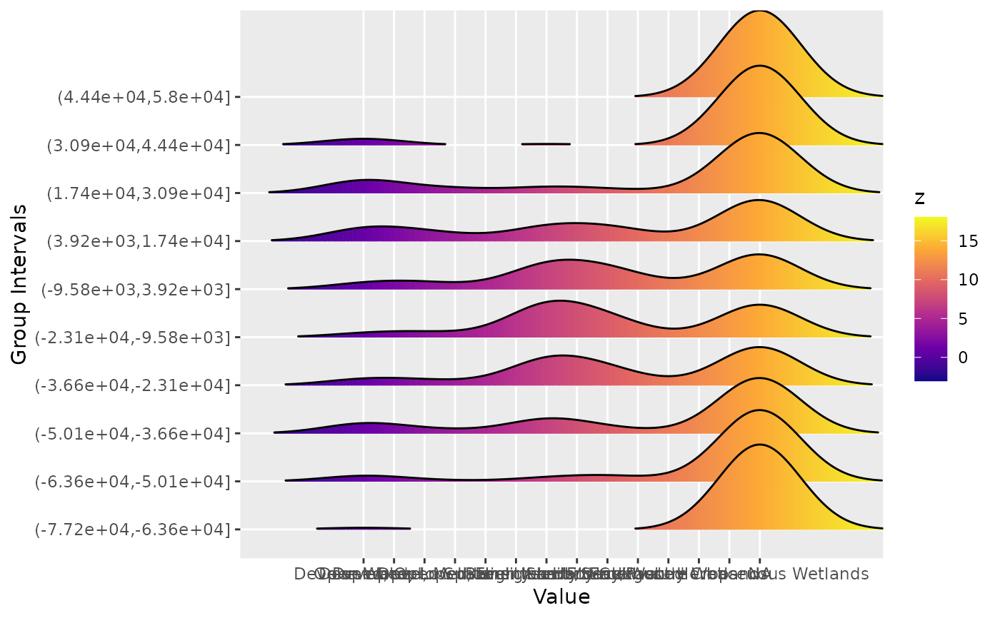
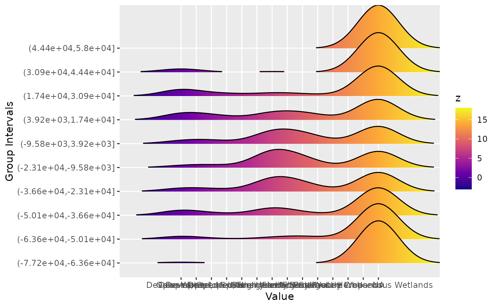

Generic function for ridgeline plots grouped by an attribute.
ridgeline.RdPlots ridgeline plots grouped by latitude/longitude or time. This function can take either a stars object or a dataframe. Input arguments differ for each case.
Usage
ridgeline(
x,
num_grps = 10,
xlab = "Value",
ylab = "Group Intervals",
title = "",
legend_title = "z",
...
)Arguments
- x
A stars object or a dataframe. Arguments differ according to the input type.
- num_grps
The number of levels for the ridgeline plot.
- xlab
The x label.
- ylab
The y label.
- title
The graph title.
- legend_title
The title for the legend.
- ...
Other arguments that need to be used for datafames or currently ignored.
Examples
# Dataframe example
library(dplyr)
data(NOAA_df_1990)
TmaxJan <- filter(NOAA_df_1990,
proc == "Tmax" &
year == 1993 &
month == 1)
ridgeline(TmaxJan,
group_col = 'lat',
z_col = 'z',
xlab = 'Maximum Temperature',
ylab = 'Latitude Intervals')
#> Warning: `stat(x)` was deprecated in ggplot2 3.4.0.
#> ℹ Please use `after_stat(x)` instead.
#> ℹ The deprecated feature was likely used in the stxplore package.
#> Please report the issue to the authors.
#> Picking joint bandwidth of 2.62
 # stars examples
library(stars)
library(units)
# stars Example 1
tif = system.file("tif/olinda_dem_utm25s.tif", package = "stars")
x <- read_stars(tif)
dim(x)
#> x y
#> 111 111
ridgeline(x, group_dim = 1)
#> Picking joint bandwidth of 3.15
# stars examples
library(stars)
library(units)
# stars Example 1
tif = system.file("tif/olinda_dem_utm25s.tif", package = "stars")
x <- read_stars(tif)
dim(x)
#> x y
#> 111 111
ridgeline(x, group_dim = 1)
#> Picking joint bandwidth of 3.15
 ridgeline(x, group_dim = 2)
#> Picking joint bandwidth of 3.63
ridgeline(x, group_dim = 2)
#> Picking joint bandwidth of 3.63
 # stars Example 2
tif = system.file("tif/lc.tif", package = "stars")
x <- read_stars(tif)
ridgeline(x, group_dim = 1)
#> Picking joint bandwidth of 1.08
# stars Example 2
tif = system.file("tif/lc.tif", package = "stars")
x <- read_stars(tif)
ridgeline(x, group_dim = 1)
#> Picking joint bandwidth of 1.08
 ridgeline(x, group_dim = 2)
#> Picking joint bandwidth of 1.35

ridgeline(x, group_dim = 2)
#> Picking joint bandwidth of 1.35
